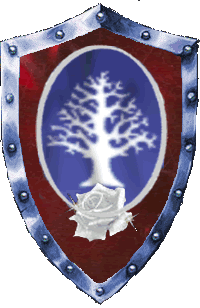

|

|
Das schwarze Brett
|
|
| Übersicht,
Alltägliches und Lokales (RPG) |
|
Die schönste aller Blumen ist verwelkt
|
| Ardán Schwarzauge (RIP) |
Die schönste aller Blumen dieser Scherbe ist verwelkt. Es trifft mich tief ins Herz, diese Nachricht zu erhalten und es schmerzt mich, sie auch anderen kundzutun. Doch ist es mir auch ein Bedürfnis, daß die Scherbe es weiß.
Serafina Ildirian, seit den ersten Tagen nach der Befreiung eine sehr gute Freundin und Gemahlin unseres Königs Seranius, ist von uns gegangen. Sie hat ihre letzte Reise angetreten.
Serafina war gewiß fast überall auf der Scherbe wegen ihrer einzigartigen Schönheit bekannt. Und oberflächliche Zeitgenossen mögen nicht mehr dahinter gesehen haben. Doch neben ihrer äußeren Pracht war Serafina eine herzensgute und fröhliche Elfe.
Als erstes weibliches Mitglied im Orden der Stille hatte sie keinen leichten Stand und es mag wohl den einen oder anderen Skeptiker gegeben haben, der sie argwöhnisch betrachtet hat. Aber schon nach kurzer Zeit hatte sie unsere Herzen im Sturm erobert. Eine Eigenschaft, die sie erst so liebenswert gemacht hat.
Ich könnte weiter von ihren Taten berichten. Wie sie bei der Besiedlung Kylls als treibende Kraft dabei war, ihre Stadt Din Pelthaes zu Pracht und Blüte gebracht hat und später auch Din Elenath hat wachsen und gedeihen lassen. Doch die Erinnerung daran schmerzt zu sehr. Meine Hände beginnen zu zittern und ich kann den Federkiel nicht mehr ordentlich führen. Also verzeiht, wenn ich hier ende.
Ich werde Serafina stets in Erinnerung behalten und ich weiß jetzt schon, daß ich manches Mal an sie denken werde. Haltet gemeinsam mit mir ihr Andenken in Ehren. Ich weiß, sie wird uns auf dem Reich Gaias beobachten.
*legt einen Strauß weißer Rosen auf das frische Grab, das nur einen Teil ihrer Asche enthält*
Lebe wohl, Serafina Ildirian, Blume Kylls!
Sir Ardán Fálmanôr, der Deichgraf,
Vorsteher von Dîn Aderthaîd,
Königlicher Deichbaumeister
Zur 17. Stunde am 89.Saatmond im Jahre 429 |
31.05.07 22:44
 |
|
| Agrippa de Arsakes (RIP) |
Wie schön!
legt eine Rose nieder und verschwindet wieder
Baronesse Agrippa de Arsakes,
Vorsteherin von Sündenpfuhl,
Priesterin im Dienste des einzig wahren Glaubens an Pheron
Zur 18. Stunde am 89.Saatmond im Jahre 429 |
31.05.07 22:52
|
|
| Mageta der Löwe (RIP) |
*Der Mann, dessen trauriges Gesicht, hinter den langen Schwarzen Haaren, verborgen scheint, bahnt sich einen Weg durch die vielen Leute, hier vor den Brettern. Er schlägt ein kleines Schreiben zu Ehren einer großen Person an das Brett und tritt dann langsam zurück*
Vieles kann man über dich sagen. So vieles, dass man es keinem Brief und keinem Papier anvertrauen oder aufbürden könnte.
Viele Wege hast du gekreuzt. So viele, dass kein Schild sie aufzeigen könnte.
Viele Herzen hast du höher Schlagen lassen. So viele, das die Schläge mehrere Leben dauern würden.
Es ist fast schon keine Last mehr, dass hier zu schreiben. Beflügelt doch einen der Gedanke an sich.
Doch ist es kein Brief der Freude, kein Schreiben des Wohlredens und auch kein Papier für gute Tage.
Dieses Schreiben soll jemanden verabschieden. Soll jemanden Glück wünschen. Soll jemandem sagen, wie sehr man ihn vermissen wird.
Es soll noch so viel mehr, doch finden meine Hände keinen Gedanken mehr.
Lebe wohl Sérafina Ildîrián.
Freiherr Mageta der Löwe,
Vorsteher von Dîn Ithil
Zur 18. Stunde am 89.Saatmond im Jahre 429 |
31.05.07 22:55
|
|
| Astaroth Aamon (RIP) |
*kommt schweigend zum Grab und legt einen Strauss weißer Lilien auf dieses, wartet einige stille Minuten und entschwindet wieder ... *
Astaroth Aamon,
Prophet im Dienste des einzig wahren Glaubens an Pheron,
Legionär Pherons
Zur 18. Stunde am 89.Saatmond im Jahre 429 |
31.05.07 22:55
|
|
| Kage Hitomi (RIP) |
*Mit gesenktem Haupt tritt auch er vor das Grab und legt einen Strauß schwarzer Rosen nieder. Dann streicht er mit einer fahrigen Bewegung seine Robe glatt und spricht dann mit trockenem Mund.*
Im Vergleich zu vielen anderen, kannte ich sie wohl nicht sehr lang, doch zumindest lang genug um Sérafina wert schätzen zu lernen.
Ein Tag der Trauer, dass eine solche Elfe uns verlassen hat; ein Tag der Trauer, dass der Stern einer solchen Frau verblasst ist. In unseren Erinnerungen soll sie uns weiterhin begleiten, während sie uns von Tura´s Reich aus weiter beobachtet und sich ihre Gedanken und Meinungen zu unserem Tun und Handeln bildet.
Eine gütige Person ohne gleichen ist von uns gegangen und zu Ehren ihres Andenkens sollten wir versuchen, die Hilfsbereitschaft und das Gute in dieser Welt und in jedem von uns zu fördern.
In den Reihen des Ordens habt Ihr eine kaum... nein, eine überhaupt nicht zu schließende Lücke hinterlassen.
Möge es Euch an nichts fehlen, im Reich der gnädigen Dame... auf ein Wiedersehen am Ende der Zeit, Pfalzgräfin Sérafina Ildîrián!
*fügt noch leise hinzu*
Unvergessen, wer Ihr wart...
*Begibt sich dann zur nächsten Kultstätte Tura´s*
Kage Hitomi,
Kardinal im Dienste des einzig wahren Glaubens an Tura
Zur 18. Stunde am 89.Saatmond im Jahre 429 |
31.05.07 22:59
|
|
Tonja Dragus
 |
Ihr Tod hat mich zutiefst getroffen!
*steht erschüttert am Grab und kann die Tränen nicht zurück halten*
Sie war die schönste Frau der Scherbe und ich habe sie immer bewundert! Sie war mir immer eine gute Freundin und ich werde sie furchtbar vermissen!
*legt eine weiße Lilie nieder*
Ich werde Dich nie vergessen!
Baronesse Tonja Dragus,
Vorsteherin von Sommergarten,
Ehefrau des ehrenwerten Galaton Dragus
Zur 19. Stunde am 89.Saatmond im Jahre 429 |
31.05.07 23:01
|
|
| Ramirez (RIP) |
*Steht schon eine Weile am Grab der großen Dame, schweigt nach wie vor*
Graf Ramirez,
Vorsteher von Dîn Nerôná
Zur 5. Stunde am 90.Saatmond im Jahre 429 |
01.06.07 1:25
|
|
Galaton Dragus
 |
*tritt hervor*
Mein Herz ist betrübt inmitten dieser düsteren Stunden. Vorherbestimmt ihr Weg, nicht wahrgenommen die Zeichen, der Erkenntis unbarmherzig und gnadenlos ausgeliefert. So stehe ich nun hier matt und kraftlos der bitteren Wahrheit gegenüber.
Inmitten der manchmal finsteren Spannungen auf Kyll, warst du ein Lichtblick. Inmitten der festgefahrenen Verhältnisse warst du ein Wegweiser. Und inmitten des tristen Alltags warst du die farbenfrohe und stets offene Person die jede Diskussion zum blühen brachte und mit deiner Offenheit meine Zweifel ausräumte.
Es gibt noch 1000 Worte die ich sagen wollte, aber nur einige sollen Dich im Jenseits erreichen...
...Danke dass ich dich kennenlernen durfte!
Die Fahnen unserer Nation sollen heute auf Halbmast wehen!
Serafina, Ave atque vale !
Fürst Galaton Dragus,
Vorsteher von Bethana,
Ehemann der reizenden Tonja Dragus,
Oberster Hoftrödler der Vertex
Zur 20. Stunde am 90.Blumenmond im Jahre 429 |
01.06.07 4:59
|
|
Solara
 |
eine persönlichkeit war sie, fürwahr! eine herzensgute seele.
dein schmerz muss unermesslich sein, freund ardan. doch trost zu spenden vermag wohl nichts in dieser zeit und keine worte der welt.
möge sera im reiche gaias frieden und glück finden.
*kniet lange im gedenken nieder und entfernt sich dann leise und unbemerkt*
Pfalzgräfin Solara,
Vorsteherin von Lunaé
Zur 5. Stunde am 1.Blumenmond im Jahre 429 |
01.06.07 7:10
|
|
| Athândira Anúldor (RIP) |
Die Seele und das Herz des Ordens, eine Elfe wie sie es nur Selten gibt...
Mein Mitgefühlt gilt Seranius und dem Orden, ruhe in Frieden Finchen...
Baronesse Athândira Anúldor,
Vorsteherin von Schattenfeste,
Verlobte des ehrenwerten Iczillion von Orcania
Zur 8. Stunde am 1.Blumenmond im Jahre 429 |
01.06.07 7:40
|
|
| Druidior (RIP) |
Auch vom mir zur " letzen " Reise alles Gute
Pfalzgraf Druidior,
Vorsteher von Caras Galadhon
Zur 10. Stunde am 1.Blumenmond im Jahre 429 |
01.06.07 8:17
|
|
| Elijah (RIP) |
Der Tod hat keine Bedeutung -
ich bin nur nach nebenan gegangen.
Ich bleibe, wer ich bin,
und auch Ihr bleibt dieselben.
Was wir einander bedeuteten, bleibt bestehen.
Nennt mich bei meinem vertrauten Namen.
Sprecht in der gewohnten Weise mit mir
und ändert Euren Tonfall nicht!
Hüllt Euch nicht
in Mäntel aus Schweigen und Kummer.
Lacht wie immer
über die kleinen Scherze, die wir teilten.
Wenn Ihr von mir sprecht, so tut es ohne Reue
und ohne jegliche Traurigkeit.
Leben bedeutet immer nur Leben
- es bleibt so bestehen, immer -
ohne Unterbrechung.
Ihr seht mich nicht,
aber in Gedanken bin ich bei Euch.
Ich warte eine Zeit lang auf Euch
- irgendwo, ganz in der Nähe -
nur ein paar Straßen weiter.
*Ein Pfotenabdruck*
Sir Elijah,
Vorsteher von Dinas Lloches
Zur 3. Stunde am 2.Blumenmond im Jahre 429 |
01.06.07 12:11
|
|
| Oren Ereliath (RIP) |
*kommt schweigend und mit gesenktem Kopf ans Grab, legt eine schwarze Rose nieder und verharrt dann eine Weile ruhig. Dann murmelt sie leise vor sich hin*
Geliebte Schwester, ich werde Dich vermissen! *snieft*
Obwohl du schon früh weggezogen warst warst du im Herzen immer bei mir und ich war stets glücklich Dich als ältere Schwester zu haben. Du wirst auch jetzt ewig in meinem Herzen sein, bis auch ich Dir in Turas Reich folgen werde. Und ich werde auch weiterhin versuchen Dich, Grosses Schwesterherz, mit Stolz zu erfüllen.
*snieft wieder kurz*
Nur werde ich die gemeinsamen Abende bei Kaffee und Klatsch vermissen.
*wischt sich eine Träne weg*
Möge Gaia weiter über Dich wachen wohin Du auch gegangen bist.
Ich liebe Dich.. *beugt sich nieder um ein kleines Medaillon auf das Grab zu legen, hält dann schluchzend die Hände vors Gesicht. Einen Moment später atmet sie tief durch, steht dann auf und schreitet davon*
Gräfin Oren Ereliath,
Vorsteherin von Arx Libertas,
Windsucherin der Atha´an Miere,
Verlobte des ehrenwerten galarick
Zur 4. Stunde am 2.Blumenmond im Jahre 429 |
01.06.07 12:30
|
|
| Tira Lu von Distelflamme (RIP) |
Finde Frieden in Turas Reich und möge dein Gemahl den Schmerz deines Todes dereinst überstanden haben.
Königin Tira Lu von Distelflamme,
Vorsteherin von Sar Sargoth,
Ehefrau des ehrenwerten Falster von Distelflamme,
Moladh an Ealain do Caint
Zur 9. Stunde am 2.Blumenmond im Jahre 429 |
01.06.07 13:31
|
|
Holgrîm
 |
*tritt weinend zu den vielen anderen an das Grab von Serafina und legt dort einen großen Blumenkranz nieder, stellt sich danach sprachlos neben seine Nationsmitglieder*
Baron HolliMandela,
Vorsteher von Dîn Ailin
Zur 12. Stunde am 3.Blumenmond im Jahre 429 |
01.06.07 19:52
|
|
| Morrigan (RIP) |
Eine Freundin, nein nicht eine, meine beste Freundin ging nun den weg ohne Wiederkehr. Dabei war Sie es die mir immer neuen Lebensmut einhauchte. Finchen mein Muzzikätzchen ich werde Dir bald folgen so warte auf mich.
Lady Morrigan,
Verlobte des ehrenwerten Marduc
Zur 12. Stunde am 3.Blumenmond im Jahre 429 |
01.06.07 19:56
|
|
| Lupina Feuernacht (RIP) |
*mit schrecken erfuhr Lupina diese traurige Nachricht und eilte sofort zu der Grabstätte.
Doch blieb sie in einiger Entfernung stehen, als sie die Menge der Trauernden sah.
Sie wartete, bis sich alle entfernten und trat dann zu dem frisch errichteten Grab.
Mit steinerner Miene kniet sie sich nieder und legt mit langsamer Bewegung einen Bund weißer Lilien nieder*
Als Handelspartner habe ich dich kennen gelernt liebe Sérafina. Eine gute Freundin bist du mir geworden.
Standest mir bei, als mir die Zeit schwer wurde und mein Herz trauerte.Nun trauert es wieder. Diesmal um dich.
Mögest du Frieden und Ruhe finden, wo auch immer du jetzt bist.
*noch lange kniete Lupina so vor dem Grab, bevor sie sich schweren Herzens erhob und langsam zum Marktplatz ging, um einen Zettel an das Brett zu hängen*
Dem König Séranius Ildîrián und dem Orden der Stille gilt mein tiefstes Mitgefühl.
Sérafina war eine großartige Frau und mir eine gute Freundin. Mein Herz trauert mit Euch.
Baronesse Lupina,
Vorsteherin von Kendhrir,
Fiese Prinzessin auf der Erbse,
Verlobte der reizenden Maria Thornfield
Zur 23. Stunde am 3.Blumenmond im Jahre 429 |
01.06.07 22:21
|
|
| Laurelin of Dórthoníôn-Coron (RIP) |
legt unbemerkt und leise einen Blumenstrauß auf das frische Grab und geht so schnell wie sie gekommen war
Laurelin of Dórthoníôn,
Kardinälin im Dienste des einzig wahren Glaubens an Tura,
Verlobte des ehrenwerten Aryâs Areón
Zur 2. Stunde am 12.Blumenmond im Jahre 429 |
03.06.07 20:02
|
|
| elendril béliar (RIP) |
Wir sind uns begegnet
du hast Spuren hinterlassen
in mir
deine Handschrift, dein Zeichen
unauslöschlich
in meinem Herzen
hast du dir Raum geschaffen
für immer.
Lebe wohl, Serafina!
elendril béliar
Zur 22. Stunde am 28.Blumenmond im Jahre 429 |
07.06.07 18:11
|
|
Übersicht,
Alltägliches und Lokales (RPG)
|
|
|
|
Dieser Beitrag
verwendet Regelvariante 3
 |
|
|